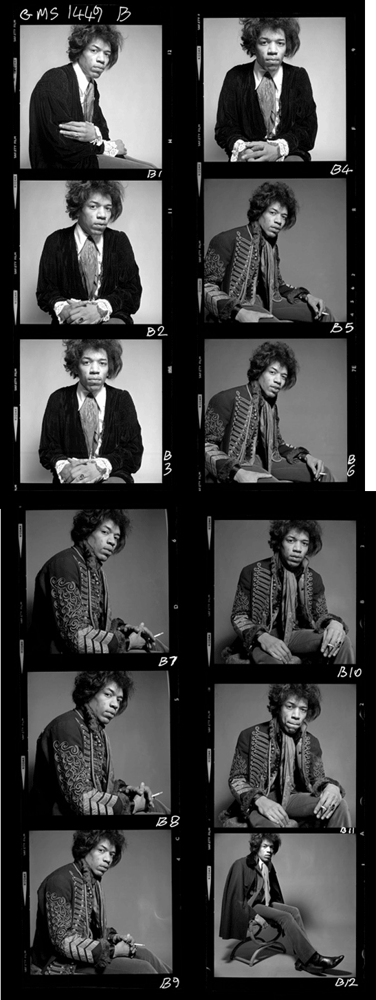

Tyler Gaw gives a shit

The most important thing to know about me as a designer, developer,
and human is that I give a shit and act accordingly.
I care immensely about the type and quality of work I’m putting out into the world.
It’s important that I believe in the motivations and goals of the projects I work on
and the people I work for. I have plenty of practical skills and
experience, but the quality of caring is what makes me a great
designer and developer.
On Design
It’s hard to say you’re a Designer these days without putting a word in front of it.
I may not have held the titles, but I practice; Product, Web, Graphic, UX, UI,
and Interaction design. The lines between each are
blurry. For each project they may happen on their own, all at once, or not at all.
I take a people-first approach to them all. I make every design
decision thinking about how it will effect the human
that it’s for.
On Developement
Programming is a means to an end. I have ideas and I want
to see them come to life. I use code to make those
ideas reality. That doesn’t mean that I approach programming
as a craft with any less enthusiasm or care as design.
I push myself to learn new languages, frameworks, and practices.
No language is off limits and I don’t shy away from learning
difficult concepts. Development technologies are in constant flux
and I love it.
Design to me is about influencing human behavior. I use my skills to encourage,
engage, entertain, entangle, envelop, and enrage.
What can I do for you?
I can design and build incredibly high-quality web sites/apps for you.
I’m most skilled with HTML, CSS, and JavaScript. I know those like the
back of my hand and have made great things with them.
On the server-side, I’ve built sites and apps using Node.js, PHP and Ruby on Rails.
I know enough Python and Django to be dangerous.
I can design iPhone and iPad apps. I’m an iOS user and enjoy designing
apps that follow the best practices and patterns put forth by Apple while
bending and breaking those practices to create unexpectedly delightful details.
This Site
I staked my claim on this piece of Internet property in 2006. Since then
I’ve maintained this site as my portfolio and blog. You can access the source
code for it here.
If you’re interested in that sort of thing.
This is the fifth iteration. Below are the previous versions.
They are a testament to how much I’ve grown personally and how high the
bar has been raised for quality in Web Design.
 Version 4 2011-2014
Version 4 2011-2014
 Version 3 2009-2011
Version 3 2009-2011
 Version 1 2006-2007
Version 1 2006-2007